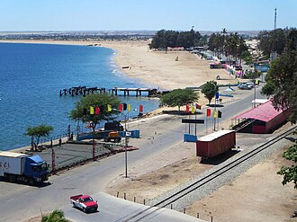
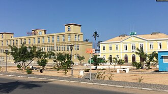

O que fazer no Namibe (Moçâmedes)
10 lugares na província do Namibe.
Na página de cada lugar: horário, preço em Kwanza (quando conhecido), como chegar, as fontes e a data de verificação. Horários e preços mudam: confirme antes de ir.
Natureza
-

-

Parque Nacional do Iona
O maior e mais antigo parque nacional de Angola.
Foto: Edward Middleton · CC BY-SA 4.0
-

Lagoa dos Arcos
Lagoas no deserto com arcos naturais de pedra.
Foto: David Stanley from Nanaimo, Canada · CC BY 2.0


.jpg){kind=link}
Praias
-

Praia das Miragens
Praia no centro de Moçâmedes, com arcos que dão sombra.
Foto: David Stanley from Nanaimo, Canada · CC BY 2.0
.jpg){kind=link}
Restaurantes
-
Liopa Restaurante
Cozinha angolana na marginal de Moçâmedes.
Alojamento
-
Viva Executive Hotel Namibe
Hotel moderno com 60 quartos em Moçâmedes.
Centros comerciais
-
Shoprite Moçâmedes
Supermercado para as compras do dia a dia.
Transportes
-
Aeroporto Welwitschia Mirabilis (Moçâmedes)
Voos da TAAG entre Moçâmedes e Luanda.
-

Estação de Moçâmedes (Caminho de Ferro de Moçâmedes)
Comboios para o Lubango e Menongue.
Foto: Armando Chicoca/VOA Português · Public domain
-
Terminal da Macon (Moçâmedes)
Autocarros para outras províncias.

Mais guias
- Agenda de eventos
- Câmbio do dia
- Como viajar entre cidades
- O que fazer em Luanda
- Restaurantes, bares e discotecas em Luanda
- Centros comerciais em Luanda
- Desporto e ginásios em Luanda
- O que fazer em Benguela e no Lobito
- O que fazer no Lubango e na Huíla
- O que fazer no Huambo
- O que fazer em Cabinda
- O que fazer em Malanje
- Praias de Angola
- Parques nacionais de Angola
- Natureza e paisagens de Angola
- Museus de Angola
- Hotéis e alojamento em Angola
- Transportes em Angola: aeroportos, comboios e autocarros
- Casas de câmbio em Angola
- Hospitais e clínicas em Angola
Things to do in Namibe (Moçâmedes)
10 places in Namibe province. Each place page has opening hours, prices in Kwanza and directions. The Tuende app is available in Portuguese, English, French and Spanish.